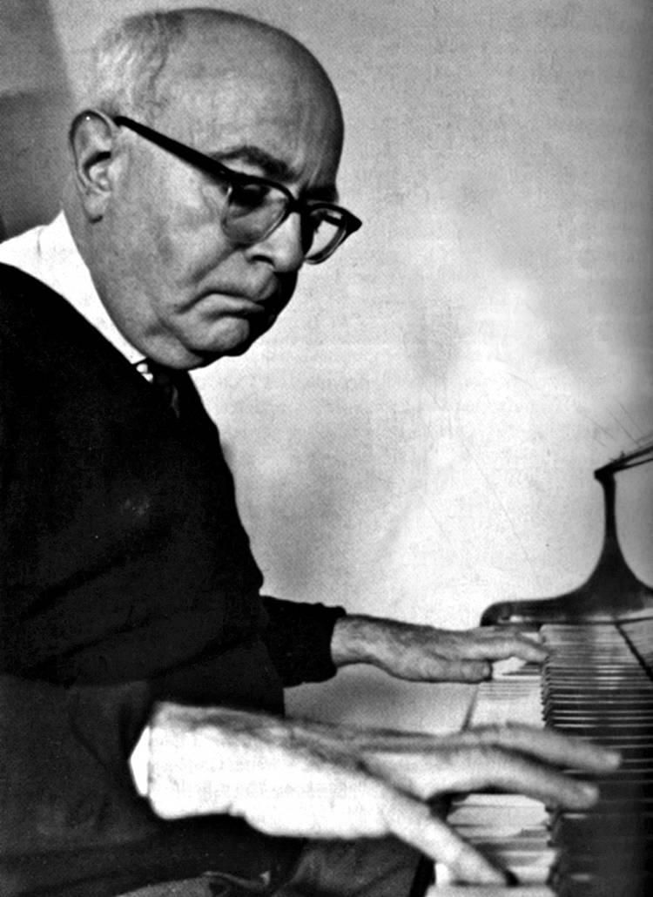

Theodor W. Adorno (/əˈdɔːrnoʊ/;[7] German: [ʔaˈdɔɐ̯no];[8][9] born Theodor Ludwig Wiesengrund; September 11, 1903 – August 6, 1969) was a German philosopher, sociologist, psychologist and composer known for his critical theory of society.
He was a leading member of the Frankfurt School of critical theory, whose work has come to be associated with thinkers such as Ernst Bloch, Walter Benjamin, Max Horkheimer, and Herbert Marcuse, for whom the works of Freud, Marx, and Hegel were essential to a critique of modern society. He is widely regarded as one of the 20th century's foremost thinkers on aesthetics and philosophy, as well as one of its preeminent essayists. As a critic of both fascism and what he called the culture industry, his writings—such as Dialectic of Enlightenment (1947), Minima Moralia (1951) and Negative Dialectics (1966)—strongly influenced the European New Left.
Amidst the vogue enjoyed by existentialism and positivism in early 20th-century Europe, Adorno advanced a dialectical conception of natural history that critiqued the twin temptations of ontology and empiricism through studies of Kierkegaard and Husserl. As a classically trained pianist whose sympathies with the twelve-tone technique of Arnold Schoenberg resulted in his studying composition with Alban Berg of the Second Viennese School, Adorno's commitment to avant-garde music formed the backdrop of his subsequent writings and led to his collaboration with Thomas Mann on the latter's novel Doctor Faustus, while the two men lived in California as exiles during the Second World War. Working for the newly relocated Institute for Social Research, Adorno collaborated on influential studies of authoritarianism, antisemitism and propaganda that would later serve as models for sociological studies the Institute carried out in post-war Germany.
Upon his return to Frankfurt, Adorno was involved with the reconstitution of German intellectual life through debates with Karl Popper on the limitations of positivist science, critiques of Heidegger's language of authenticity, writings on German responsibility for the Holocaust, and continued interventions into matters of public policy. As a writer of polemics in the tradition of Nietzsche and Karl Kraus, Adorno delivered scathing critiques of contemporary Western culture. Adorno's posthumously published Aesthetic Theory, which he planned to dedicate to Samuel Beckett, is the culmination of a lifelong commitment to modern art which attempts to revoke the "fatal separation" of feeling and understanding long demanded by the history of philosophy and explode the privilege aesthetics accords to content over form and contemplation over immersion.